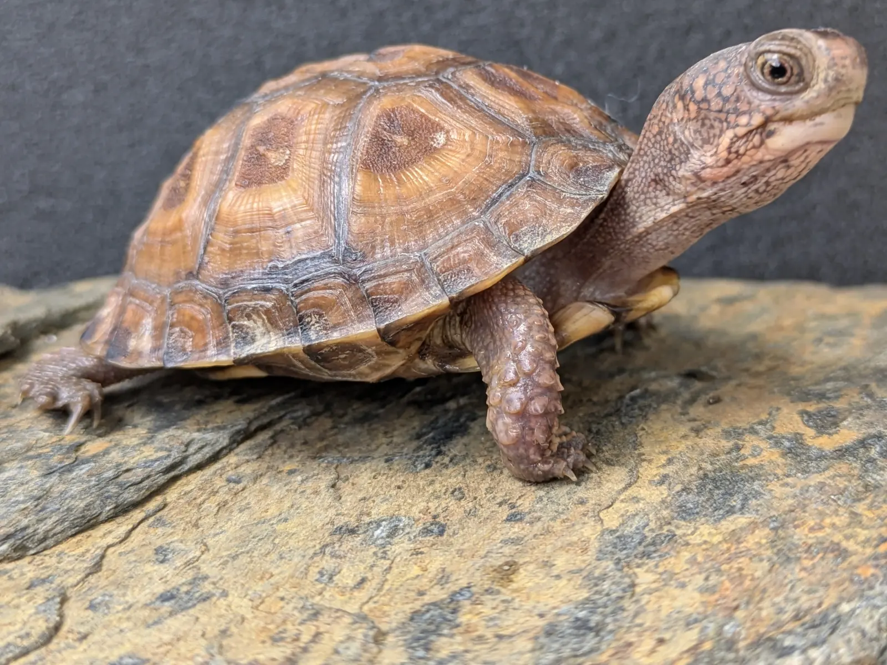
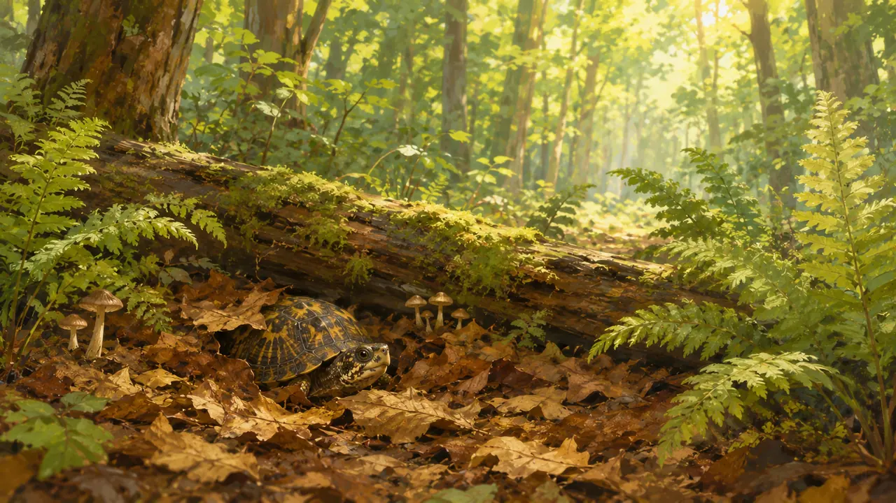
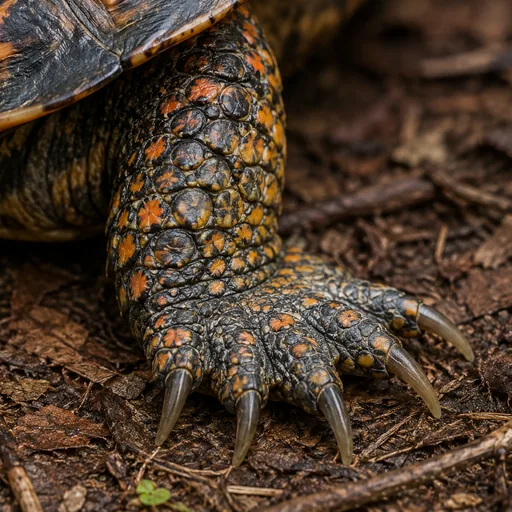
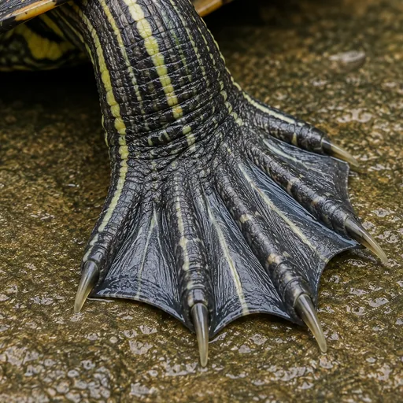
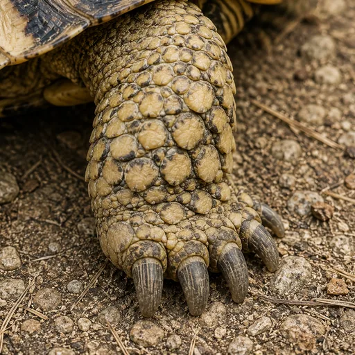

ほんものの カメを 見る

これは ほんものの カメ。甲羅を よく 見て みよう。何か きまった かたちが かくれて いるよ。
ほんとうの はなし
六角形の もようが ならんで いるね。この ひとつ ひとつを 甲板と いうんだ。
しめった もり

落ち葉の 中に 何か いる。見つけられる？
ほんとうの はなし
この カメは 森の 地面で くらすんだ。落ち葉の 下は しめって いて、すずしいんだ。
甲羅の 色は 落ち葉と よく にて いるね。どうして だろう？ ほんとうの ところは、まだ よく わかって いないんだ。
甲羅に フタが ある！？
トウブハコガメの おなかの 甲羅には、まがる ところが あるんだ。そこを うごかすと、あたまも 足も しっぽも 中に 入れて、甲羅を ぴったり しめる ことが できるよ。
はこの ふたの ように しまるので、ハコガメと いうんだ。

この カメの 足だよ。よく 見て みよう。
この カメは どこで くらして いると おもう？
ずんぐりと 太い 足だったね。陸を あるく カメには、こういう 足が 多いよ。


でも、かたちだけで きめては いけないよ。ほかにも ヒントは あるんだ。